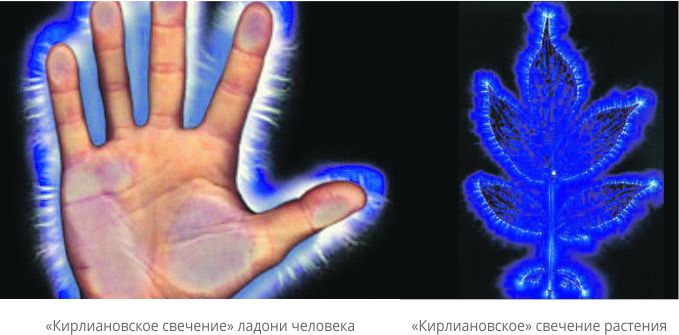

Как растения могут защищать и помогать человеческому организму?

«Счастье человека в нём самом, а не в звёздах: он зачат вместе с ними и вырастает в утробе матери,
но, несмотря на это, он уже знает о гармонии между макрокосмосом и микрокосмосом – человеком».
Парацельс
Здоровье человечества под серьёзной угрозой. Медики, социологи, психологи с тревогой отмечают резкое ухудшение экологической ситуации, неблагоприятную динамику показателей здоровья населения Планеты: повсеместное распространение получила наркомания, токсикомания, алкоголизм. Возрастает стремительными темпами заболеваемость среди детей и подростков. Причина происходящего - это, прежде всего, снижение жизненного уровня большинства социальных слоёв общества, а также постоянно испытываемые людьми психологические стрессы.
Природа на страже
В условиях, когда «маленький человек» попадает в такие чрезвычайные обстоятельства, а выживание становится главной жизненной проблемой, приходит понимание, что необходимы принципиально новые подходы и новая стратегия не только в организации медицинской помощи, но и в реализации практических технологий программирования и управления процессами старения. Успешная реализация данных технологий не мыслима без осознания того, что старение и главные болезни человечества имеют одну общую причину - это информационный синдром, характеризующийся дисфункциями на клеточном уровне! Результатом чего возникают взаимосвязанные процессы ожирения, атеросклероза, сахарного диабета, онкопатологии, остеопороза и многие другие нарушения гомеостаза человека.
На здоровье и продолжительность жизни отражается в первую очередь воздействие социально-психологических условий жизни, труда, но главное - морально-нравственное и духовное состояние общества. Необходимо помнить, что согласно различным данным здоровье населения на 45-50% определяется образом жизни - это прежде всего качество питания, условия труда, материально-бытовые и социальные факторы, на 17-20% - внешней средой обитания, природно-климатическими условиями, на 18-20% - генетическими факторами и только на 8-10% - эффективностью системы здравоохранения.
ПОМОЧЬ
ОСЛАБЛЕННОМУ ОРГАНИЗМУ
Пропагандой здорового образа жизни с самого раннего возраста, ограничением потребления животного жира и консервантов человечество ничего не добилось, ибо известно, что в рационе здорового человека необходимо присутствие около 75%-80% растительной пищи - прежде всего овощей и фруктов, круп, орехов, а вот животной пищи в рационе должно присутствовать не более 10-15%!
Фауна решает
Нами совместно с учёными Перу было выбрано несколько высокогорных растений, несущих в себе способность гармонизации клетки человека и природы, и тем самым останавливать процессы накопления повреждений, обусловленных негативной внешней средой обитания!
Первым из этого списка нами было выбрано растение, относящееся к семейству Cucurbitaceae. Это вьющееся годовое растение, широко распространённое в Перу, стебель которого может достигать 5 м в высоту. Плоды представляют собой продолговатые уплотнённые стручки, обычно загнутые у основания, длиной 10-20 см.
Исследования на клеточном уровне показали, что это растение является профилактическим и терапевтическим средством, способствующим снижению общего холестерина за счёт регуляции метаболизма жиров. Благодаря липотропному действию растения стабилизируется содержание холестерина в крови, как за счет нормализации синтеза ЛПВП, так и благодаря снижению в крови ЛПНП, который накапливается на стенках сосудов и может приводить к формированию атеросклеротической бляшки, уменьшающей просвет сосуда, затрудняющей прохождение крови и нарушающей питание органов и тканей.
Многолетняя лиана семейства мареновых Uncaria Tomentosa стала известна учёным более 40 лет назад.
Лечебные свойства этого растения изучают в медицинских центрах Перу, США, Австрии, Китая и др. В России клинические исследования свойств препарата из этой лианы были проведены в Российском онкологическом научном центре РАМН, НИИ фармакологии РАМН, НИИ хирургии им. А.В. Вишневского. Данные исследования позволили хорошо изучить состав активного вещества и подтвердили высокую терапевтическую эффективность препарата из этого растения при многих заболеваниях.
Экстракт данного растения можно использовать при ревматоидных артритах, артрозах, доброкачественных образованиях, при заболеваниях желудочно-кишечного тракта, при снижении иммунитета, при хроническом пиелонефрите, цистите, простатите, при хронических бронхитах, бронхиальной астме, при хроническом остеомиелите и хроническом стрессе.
Наиболее эффективным вмешательством в клеточное пространство человека обладают комбинации экстрактов коры лианы Uncaria Tomentosa и экстракта Bixa Orellana, где совмещаются иммуностимулирующие и противовоспалительные свойства коры Uncaria tomentosa с бактерицидным и мочегонным воздействием листьев Bixa orellana.
Высокогорный помощник
Исследование влияния на здоровье человека растения с клубневидным корнем Lepidium Meyenii Walp, по виду напоминающим маленькую морковь цвета картофеля (растение имеет сладковатый вкус, произрастает в высокогорных зонах Анд на высоте 4000—5000 м над уровнем моря), показало, что оно является тоником-восстановителем жизненных сил. В андской медицине считается прекрасным терапевтическим средством при нервном перенапряжении, усиливает физическую и умственную активность, регулирует гормональную систему, это прекрасное терапевтическое средство при заболеваниях дыхательных путей, ревматизме.
Phyllanthus niruri - растение из семейства молочайных - однолетнее травянистое дикорастущее растение высотой 30-60 см с малоразветвлённым стеблем и корнем.
В фитохимический состав входят лигнаны, терпены, флавоноиды, липиды, бензеноиды, алкалоиды, стероиды, алканы, витамин С, танины, сапонины. Может применяться при мочекаменной болезни, при желчнокаменной болезни, в т.ч после холецистэктомии для профилактики вторичного камнеобразования в желчных протоках, при сахарном диабете 2 типа и при перенесённых гепатитах А и В.
Совсем недавно холдингом получен ещё один патент Российской Федерации на лечение сахарного диабета из лекарственных растений Перу. В заключение можно только подтвердить, что природные клеточные технологии являются естественными препаратами, дарованы Космосом для гармонизации человека с Природой, что подтверждает слова великого врача Пирогова Н.И.: «Настоящая медицина есть сплошная профилактика!» Подробности описания лекарственных препаратов можно найти на сайте НИИ: www. medicinaveka.info
В.В. Бородулин, член-корреспондент АТН РФ, зам. директора
Л.И. Маслов, д.т.н., профессор, академик АТН РФ и РАЕН,директор
Холдинга «НИИ Здоровьесберегающие технологии»

{kind=link}